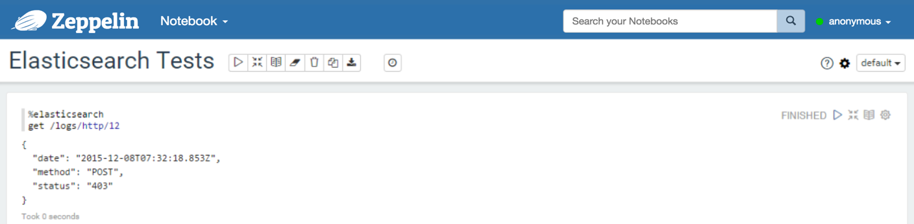
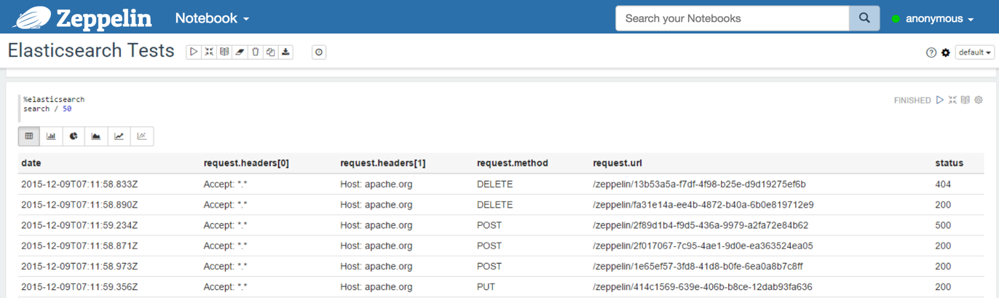
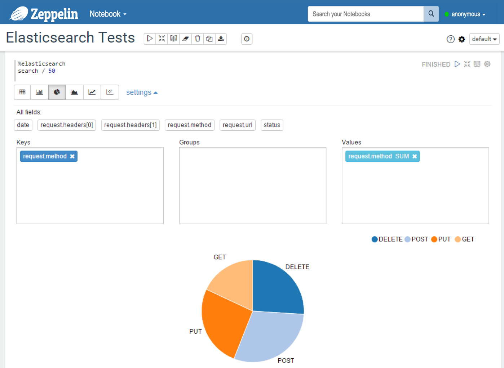
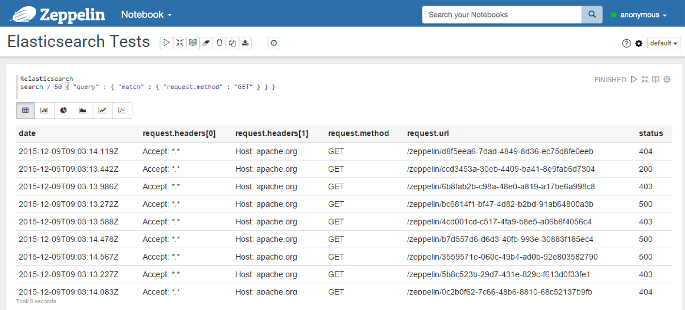
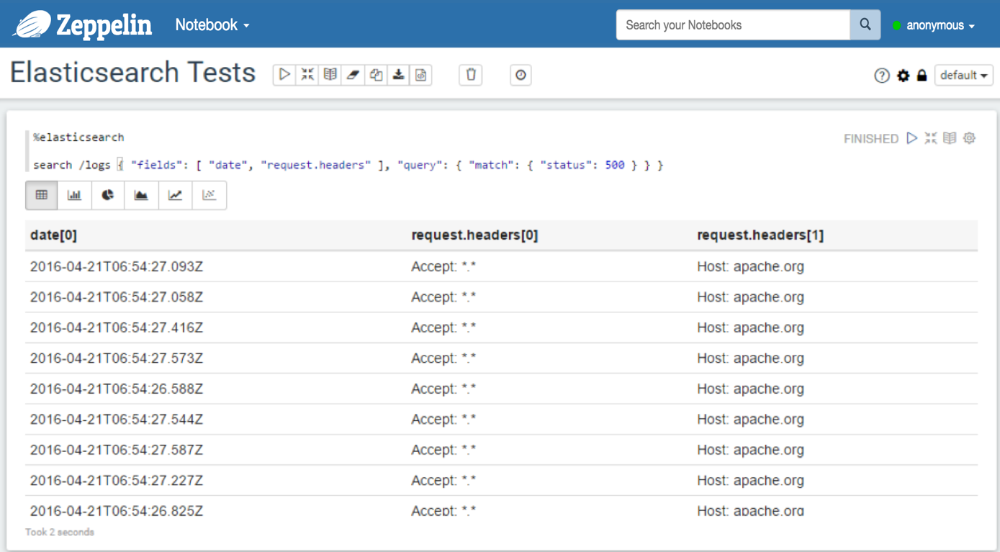
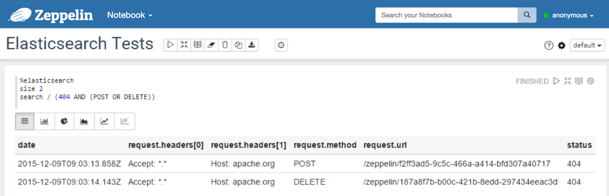
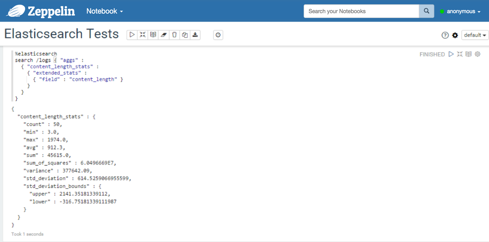
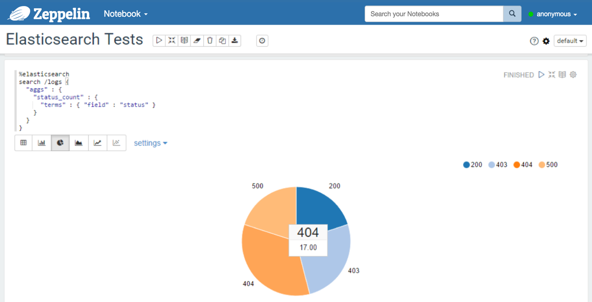
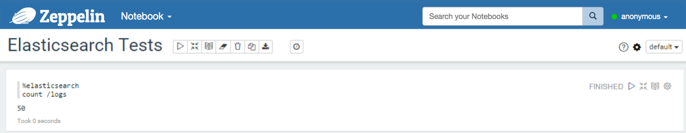
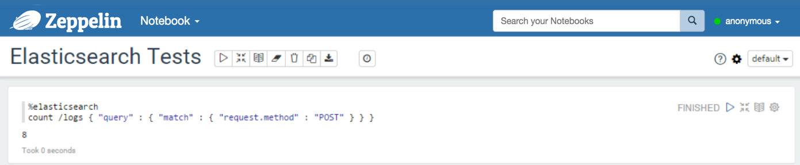

Elasticsearch Interpreter for Apache Zeppelin
Overview
Elasticsearch is a highly scalable open-source full-text search and analytics engine. It allows you to store, search, and analyze big volumes of data quickly and in near real time. It is generally used as the underlying engine/technology that powers applications that have complex search features and requirements.
Configuration
| Property | Default | Description |
|---|---|---|
| elasticsearch.cluster.name | elasticsearch | Cluster name |
| elasticsearch.host | localhost | Host of a node in the cluster |
| elasticsearch.port | 9300 | Connection port ( Important: it depends on the client type, transport or http) |
| elasticsearch.client.type | transport | The type of client for Elasticsearch (transport or http)( Important: the port depends on this value) |
| elasticsearch.basicauth.username | Username for a basic authentication (http) | |
| elasticsearch.basicauth.password | Password for a basic authentication (http) | |
| elasticsearch.result.size | 10 | The size of the result set of a search query |
Note #1 : You can add more properties to configure the Elasticsearch client.
Note #2 : If you use Shield, you can add a property named
shield.userwith a value containing the name and the password ( format:username:password). For more details about Shield configuration, consult the Shield reference guide. Do not forget, to copy the shield client jar in the interpreter directory (ZEPPELIN_HOME/interpreters/elasticsearch).
Enabling the Elasticsearch Interpreter
In a notebook, to enable the Elasticsearch interpreter, click the Gear icon and select Elasticsearch.
Using the Elasticsearch Interpreter
In a paragraph, use %elasticsearch to select the Elasticsearch interpreter and then input all commands. To get the list of available commands, use help.
%elasticsearch
help
Elasticsearch interpreter:
General format: <command> /<indices>/<types>/<id> <option> <JSON>
- indices: list of indices separated by commas (depends on the command)
- types: list of document types separated by commas (depends on the command)
Commands:
- search /indices/types <query>
. indices and types can be omitted (at least, you have to provide '/')
. a query is either a JSON-formatted query, nor a lucene query
- size <value>
. defines the size of the result set (default value is in the config)
. if used, this command must be declared before a search command
- count /indices/types <query>
. same comments as for the search
- get /index/type/id
- delete /index/type/id
- index /index/type/id <json-formatted document>
. the id can be omitted, elasticsearch will generate one
Tip : Use ( Ctrl + . ) for autocompletion.
Get
With the get command, you can find a document by id. The result is a JSON document.
%elasticsearch
get /index/type/id
Example: 
Search
With the search command, you can send a search query to Elasticsearch. There are two formats of query:
- You can provide a JSON-formatted query, that is exactly what you provide when you use the REST API of Elasticsearch.
- See Elasticsearch search API reference document for more details about the content of the search queries.
- You can also provide the content of a
query_string.- This is a shortcut to a query like that:
{ "query": { "query_string": { "query": "__HERE YOUR QUERY__", "analyze_wildcard": true } } } - See Elasticsearch query string syntax for more details about the content of such a query.
- This is a shortcut to a query like that:
%elasticsearch
search /index1,index2,.../type1,type2,... <JSON document containing the query or query_string elements>
If you want to modify the size of the result set, you can add a line that is setting the size, before your search command.
%elasticsearch
size 50
search /index1,index2,.../type1,type2,... <JSON document containing the query or query_string elements>
A search query can also contain aggregations. If there is at least one aggregation, the result of the first aggregation is shown, otherwise, you get the search hits.
Examples:
With a JSON query:
%elasticsearch search / { "query": { "match_all": { } } } %elasticsearch search /logs { "query": { "query_string": { "query": "request.method:GET AND status:200" } } } %elasticsearch search /logs { "aggs": { "content_length_stats": { "extended_stats": { "field": "content_length" } } } }With query_string elements:
%elasticsearch search /logs request.method:GET AND status:200 %elasticsearch search /logs (404 AND (POST OR DELETE))
Important : a document in Elasticsearch is a JSON document, so it is hierarchical, not flat as a row in a SQL table. For the Elastic interpreter, the result of a search query is flattened.
Suppose we have a JSON document:
{
"date": "2015-12-08T21:03:13.588Z",
"request": {
"method": "GET",
"url": "/zeppelin/4cd001cd-c517-4fa9-b8e5-a06b8f4056c4",
"headers": [ "Accept: *.*", "Host: apache.org"]
},
"status": "403",
"content_length": 1234
}
The data will be flattened like this:
| content_length | date | request.headers[0] | request.headers[1] | request.method | request.url | status |
|---|---|---|---|---|---|---|
| 1234 | 2015-12-08T21:03:13.588Z | Accept: *.* | Host: apache.org | GET | /zeppelin/4cd001cd-c517-4fa9-b8e5-a06b8f4056c4 | 403 |
Examples:
With a table containing the results: 
You can also use a predefined diagram: 
With a JSON query: 
With a JSON query containing a
fieldsparameter (for filtering the fields in the response): in this case, all the fields values in the response are arrays, so, after flattening the result, the format of all the field names isfield_name[x]With a query string: 
With a query containing a multi-value metric aggregation: 
With a query containing a multi-bucket aggregation: 
Count
With the count command, you can count documents available in some indices and types. You can also provide a query.
%elasticsearch
count /index1,index2,.../type1,type2,... <JSON document containing the query OR a query string>
Examples:
Without query: 
With a query: 
Index
With the index command, you can insert/update a document in Elasticsearch.
%elasticsearch
index /index/type/id <JSON document>
%elasticsearch
index /index/type <JSON document>
Delete
With the delete command, you can delete a document.
%elasticsearch
delete /index/type/id
Apply Zeppelin Dynamic Forms
You can leverage Zeppelin Dynamic Form inside your queries. You can use both the text input and select form parameterization features.
%elasticsearch
size ${limit=10}
search /index/type { "query": { "match_all": { } } }